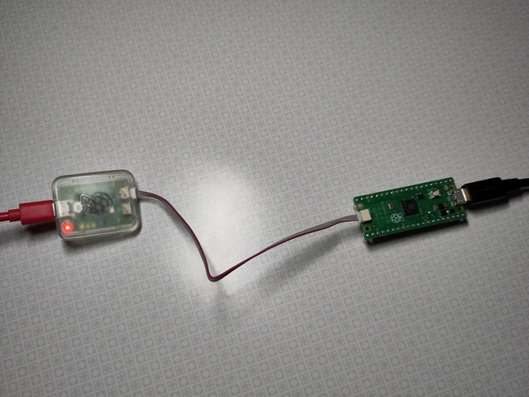

Getting Started with Embedded Rust, Embassy, and the Raspberry Pi Pico
Introduction
There are many ways to get started with embedded development. Even if you already decided on Rust as a language, there's still a huge array of options to choose from. What hardware are you going to use? What software to run on it? Keep it simple, or go with some kind of operating system?
These choices can be paralyzing! The goal of this article is to clear the analysis paralysis by teaching you one specific way of getting started. I'll tell you exactly what hardware to buy, what software to download, and how to set it all up. All of that without requiring much prior knowledge.
No article can prepare you for all of the potential projects you might want to do. This one is designed to be your first step. If you want to branch out later, it will hopefully be manageable, because you'll have learned some of the background here.
Technology Stack
This article introduces embedded software development using the following technologies:
- Rust is a modern programming language with great tooling. For embedded development, it is by and large just as capable as more traditional choices, like C or C++.
- Embassy is a framework for embedded applications (written in Rust) that is both powerful and convenient. It also supports a wide variety of hardware out of the box, providing lots of flexibility.
- The Raspberry Pi Pico is a board that features the RP2040, which is a pretty interesting microcontroller. The Pi Pico and the RP2040 have a big community, and there's a large ecosystem of related hardware, including many other boards that feature the RP2040.
- probe-rs is an embedded debugging toolkit, also written in Rust, which integrates nicely with the rest of the tooling we're going to use. We will use it together with the Raspberry Pi Debug Probe to interact with the Pi Pico.
"Embedded" can mean a lot of things. By choosing a microcontroller, basically a tiny computer in a single chip, we're going for the lower end of the spectrum. Due to their small size, low power use, and lots of options to connect to other hardware, microcontrollers are very flexible and can find a place in many projects.
Programming a microcontroller brings you much closer to the hardware than you'd typically get, which is fun and interesting! And while they are far from having the processing power of modern CPUs, these days they are plenty powerful for many applications.
Buying the Hardware
Okay, so we're doing embedded development, which means we need hardware! I already mentioned what we're using above, but let's get into the specifics of what you need to buy:
- The Raspberry Pi Pico H is a variant of the Raspberry Pi Pico with pre-soldered GPIO headers, meaning you won't need any additional tools and skills to set it up. By clicking
Buy nowon the Pi Pico product page and selectingGPIO Headers->Yes, you should hopefully be able to find a distributor that ships to your location. - The Raspberry Pi Debug Probe is a device that connects your computer to the Pi Pico, and provides some convenient features that are going to be useful during development.
- A USB A to Micro-B cable. A USB cable comes already included with the Debug Probe, but we'll need an additional one to supply power to the Pi Pico.
That's all! I've specifically selected this hardware to keep things simple, so you don't need any more wires, tools, or skills (like soldering) to get started. You can make changes here, like substituting a different Pi Pico variant or debug probe. But unless you know what you're doing, I don't recommend it.
Installing Rust
While you wait for your hardware to arrive, we can start getting ready by installing Rust! This isn't a Rust tutorial, but even if you already know Rust, using it for embedded software is going to require some special handling.
First, you need to install rustup, a tool that installs and manages Rust toolchains. The specifics of how to do that are going to depend on your operating system. A good starting point is the official Install Rust page.
Again, please note that we need rustup specifically. It's possible to have a Rust installation without rustup, so don't skip this step, even if you already have Rust installed.
Why do we need rustup? Two reasons:
- Some features of Embassy still require a nightly version of Rust to work. We could use Embassy without those, but I think the loss of convenience is not going to be worth it. Rustup is the easiest way to install a specific nightly version of Rust and update it later, as needed.
- Targeting a microcontroller requires some extra components that don't usually ship with a Rust toolchain, but which Rustup can install easily.
Once you have installed rustup, you can confirm that your setup works by creating a small Rust application:
- Go to the directory where you want to create your embedded project and type the following commands:
cargo new getting-started
cd getting-started
This creates a new directory, getting-started, as well as a simple Rust application within it. We also switch to that directory right away, since that's where the following steps need to take place.
- Within the new
getting-starteddirectory, create a file calledrust-toolchain.tomland add the following contents:
# rust-toolchain.toml
[toolchain]
channel = "nightly-2023-10-02"
targets = ["thumbv6m-none-eabi"]
This tells rustup to use a specific nightly version of Rust when doing anything in this directory. This version is known to work with the version of Embassy we're going to use. It also tells rustup to install support for the RP2040 (the thumbv6m-none-eabi target). We don't need this yet, but it's part of testing our setup.
- Finally, run the Rust application:
cargo run
This should result in rustup downloading and installing the Rust toolchain we requested (which can take a while!), then run the program. If this ends with Hello, world! being printed to the screen, then everything is working!
Installing probe-rs
At this point, we're ready to compile Rust code that runs on the Pi Pico. We still need some way to then download the compiled program onto the hardware though (we embedded folks call that "flash the program", because flash memory is where the program usually ends up). That's what probe-rs is for!
Before you can install it, you might need to install some prerequisites. Please follow the instructions over in the probe-rs documentation.
Once you've got the prerequisites, the actual installation looks like this:
cargo install probe-rs --locked --features=cli --version=0.21.0
If you're running Linux you need an extra step to make things work! Accessing debug probes via USB requires extra permissions, so unless you want to run probe-rs as root (not recommended!), please do the following:
- Download probe-rs' udev rules and place them into
/etc/udev/rules.d. - Load the new rules:
udevadm control --reload - Ensure the new rules are applied to already connected devices:
udevadm trigger
There is some more detail in the probe-rs documentation.
Setting Up the Hardware
By this point, we need that hardware you ordered! If it hasn't arrived yet, maybe pass the time by learning more about Rust, Embassy, probe-rs, or the Raspberry Pi Pico. Or skip ahead and already look at the rest of this article. Don't forget to bookmark this page, so you find your way back once you're ready!
Before we try to program the Pi Pico with our own code, let's set it up and see if it's working correctly.
- Connect the Raspberry Pi Debug probe to your PC via the USB cable included with the probe.
A red LED should turn on immediately, to signal that the probe has power.
-
The probe has two other connectors, one labeled
U, the otherD. Connect theDport to the Pi Pico's debug port using the cable included with the probe. -
Use the other USB cable to connect the Pi Pico to a power source.
Here's what that should look like, fully connected.

- Go to a fresh directory, clone the Embassy repository, and check out the specific version that is known to work with this article:
git clone https://github.com/embassy-rs/embassy.git
cd embassy
git switch -d c3ef98a
- The Embassy repository includes some example programs that are known to work on the Pi Pico. Let's run one of them, to ensure our hardware is set up correctly:
cd examples/rp
cargo run --bin blinky
This will take a while, when doing it for the first time! If everything went correctly, you should see confirmation from Cargo that it compiled the example, then two progress bars from probe-rs as it flashes the example.
Once that is done, the green LED on the Pi Pico should start blinking, and you should see log output from the program beside that.
Writing the Application
We've confirmed that both our Rust installation and the hardware work correctly. It's finally time to write our own code!
Let's go back to that getting-started directory we created to test our Rust installation. We've already added a rust-toolchain.toml there. Let's continue with some more files!
- We need a
.cargo/config.toml(that's a file calledconfig.tomlin a sub-folder called.config), to make sure Cargo does the right thing:
# .cargo/config.toml
[build]
target = "thumbv6m-none-eabi"
[target.thumbv6m-none-eabi]
runner = "probe-rs run --chip=RP2040"
rustflags = ["-C", "link-args=-Tlink.x -Tlink-rp.x -Tdefmt.x"]
[env]
DEFMT_LOG = "debug"
Here we tell Cargo to do multiple things:
- Compile for
thumbv6m-none-eabi, which is the correct target for the RP2040. - Use probe-rs when we call
cargo run, instead of trying to run the binary on the host computer. - Include some linker scripts (
link.x,link-rp.x,defmt.x, all provided by our dependencies; we'll go into that in a moment). These make sure everything ends up in the right place in the final binary. Rust (and the linker) already know how to do this when targeting an operating system, but microcontrollers are pretty diverse and need special handling. - Configure a thing called "defmt", which we'll get into later.
- Next, we need to update our
Cargo.toml(which should already exist in the directory), to include the right dependencies. Here's what that should look like:
# Cargo.toml
[package]
name = "getting-started"
version = "0.1.0"
edition = "2021"
[dependencies]
cortex-m-rt = "0.7.3"
defmt = "0.3.5"
defmt-rtt = "0.4.0"
[dependencies.embassy-executor]
git = "https://github.com/embassy-rs/embassy.git"
rev = "c3ef98a"
features = ["nightly", "arch-cortex-m", "executor-thread", "integrated-timers"]
[dependencies.embassy-rp]
git = "https://github.com/embassy-rs/embassy.git"
rev = "c3ef98a"
features = ["critical-section-impl", "time-driver"]
[dependencies.embassy-time]
git = "https://github.com/embassy-rs/embassy.git"
rev = "c3ef98a"
[dependencies.panic-probe]
version = "0.3.1"
features = ["print-defmt"]
All we're doing here is to include a bunch of dependencies that our program is going to use. Let's go through them, one by one:
- The RP2040 is an Arm Cortex-M0+ microcontroller, and
cortex-m-rtknows how to deal with those. - Rust's formatting infrastructure is pretty heavy-weight in terms of code size. Usually we don't care, but a few kB can make a lot of difference on a microcontroller!
defmtlets us use logging in our application, but instead of formatting those log messages on the device itself, it sends raw binary data, and those log messages get formatted on the host computer instead!defmt-rttmakes that all work using RTT, which is one way to transport data between the microcontroller and the host. probe-rs takes care of the host side of things. - As I said above, we're using Embassy to write our application, and
embassy-executoris a core part of that. It's an async executor which is going to make our life very easy. We'll see what that means later, when we look at the Rust code. - In addition to
embassy-executor, which supports all hardware that Embassy supports, we also need a library that knows how to talk to the RP2040 specifically (we call that a HAL, Hardware Abstraction Layer). This is whatembassy-rpdoes. embassy-timeis another component of Embassy, this one making sure we can deal with time (again, we'll see in the Rust code).embassy-time's API is not hardware-dependent, butembassy-rpneeds to provide some low-level bits to make it work for our specific case.- Normally, Rust knows how to panic, but again, microcontrollers tend to be a bit special. We might even want to do totally different things in case of a panic, depending on the specific deployment scenario. For our purposes, we use
panic-probeto provide a panic handler which sends the panic message to the host using defmt (where it's handled by probe-rs).
- With the dependencies handled, there's one more thing we need to deal with before we can get into the Rust code: Tell the linker exactly how much memory is available and where it is. We do that using a file called
memory.x:
/* memory.x */
MEMORY {
BOOT2 : ORIGIN = 0x10000000, LENGTH = 0x100
FLASH : ORIGIN = 0x10000100, LENGTH = 2048K - 0x100
RAM : ORIGIN = 0x20000000, LENGTH = 256K
}
For most of the hardware that Embassy supports, we don't need to provide that file. By depending on one of Embassy's HALs, we usually tell it everything it needs to know to provide the right file itself.
It's a bit different for the RP2040 though, as unlike many microcontrollers, it doesn't have internal flash memory. The flash memory is a separate chip on the Pi Pico. For that reason, the size of the flash might vary, depending on which specific board we're using (and as I said above, there are many boards that have the RP2040).
Since embassy-rp only knows about the RP2040 and doesn't care about the board, we need to provide that information ourselves (or risk getting a nasty linker error at compile-time).
- Finally, we've set everything up and can start getting into the Rust code! Here's what we need our
src/main.rsto look like:
// src/main.rs
#![no_std]
#![no_main]
#![feature(type_alias_impl_trait)]
use defmt_rtt as _;
use embassy_executor::Spawner;
use embassy_rp::gpio::{Level, Output};
use embassy_time::{Duration, Timer};
use panic_probe as _;
#[embassy_executor::main]
async fn main(_spawner: Spawner) {
defmt::info!("Initializing...");
let peripherals = embassy_rp::init(Default::default());
let mut led = Output::new(peripherals.PIN_25, Level::Low);
defmt::info!("Initialized.");
loop {
defmt::info!("LED on!");
led.set_high();
Timer::after(Duration::from_millis(50)).await;
defmt::info!("LED off!");
led.set_low();
Timer::after(Duration::from_millis(950)).await;
}
}
A few things going on there:
- We tell the Rust compiler not to use the standard library (
#[no_std]), as that would require an operating system to run on; and to not worry about themainfunction (#[no_main]), as - again - microcontrollers need special handling, and this is taken care of bycortex-m-rtandembassy-executor. - Specify the one nightly feature (
type_alias_impl_trait) that Embassy still needs (at least in the configuration we're using it in). - Use a bunch of stuff from dependencies.
use defmt_rtt as _anduse panic_probe as _are notable here, as we don't directly use anything from them. They do set up important code in the background though, and unless we reference them here in some way, the compiler won't include them. - Set up our
mainfunction. We use a special macro here to create the async executor that will run themainfunction.- Within the main function, we tell
embassy-rpto initialize the hardware. - We initialize a specific pin (
PIN_25) which happens to be wired to the LED on the Pi Pico. - We blink that LED in a loop.
- Within the main function, we tell
As far as embedded applications go, this one is rather high-level. Thanks to Embassy! The special thing here is that our main function is async, meaning it won't run to the end in one go, but returns control to the caller at various intermediate points.
Whenever we .await something in main, control is returned to the executor. The executor will then put the RP2040 into a power-saving sleep mode. The thing we .await, which in this examples are timers, know how to notify the executor when things are ready. When that happens, the executor wakes up and resumes our main function at that point.
This is a great fit for embedded. Using this system, we can write code that looks sequential (just turn the LED on, wait, turn it off, wait, ...), while leaving it to the executor to run other things or go into sleep modes, as required. And of course, there's more to that system than we can see here, in this simple example.
Running the Application
So there we have it. An embedded application, for the RP2040 and the Raspberry Pi Pico, written in Rust. All that's left is to run it. Fortunately, with all the setup we've done, this is rather easy:
cargo run
Remember, we've configured Cargo to use probe-rs as the runner, so this command will compile the application, upload it to the Pi Pico using probe-rs, and run it there. probe-rs will also stay connected to the running application, show us log messages using defmt and RTT, and, if it comes to that, a panic message.
All of that is pretty neat! And as far as microcontrollers go, it's a very convenient setup.
What's next?
We've written a microcontroller application that blinks an LED. As far as embedded systems go, this basically is the equivalent of "Hello, world!". What's in front of us is a world of possibilities!
We can connect to a wide variety of sensors, to measure temperature, air quality, acceleration, or whatever else we desire (and can buy a sensor for). We can connect all kinds of actuators, like a motor. Or add LEDs to build a lamp!
This article ends here, but it hopefully has provided you with some basic understanding on how to write an embedded application in Rust, putting you into the position to explore further. If you are interested in anything specific, please let me know, so I know what to write about next!